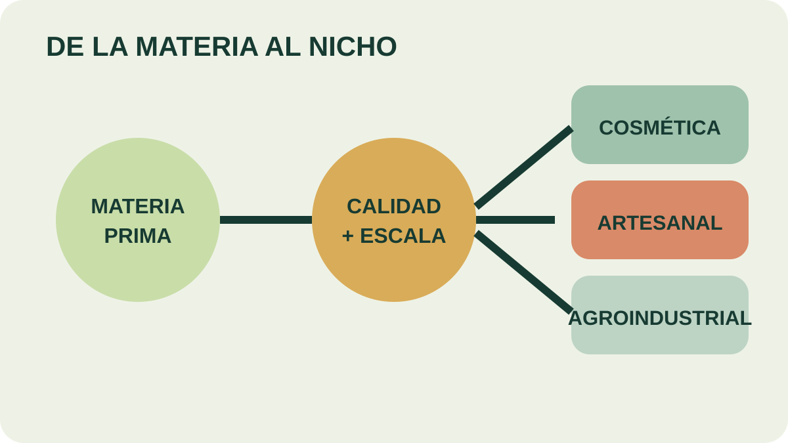

Módulo 31 · 25 minutos
Mercado, nichos y responsabilidad
Al terminar, vas a poder elegir un nicho realista y explicar la responsabilidad ecológica y técnica que implica abastecerlo.
Un mercado pequeño puede tener la escala correcta
El mercado interno de muchos aceites es reducido. Para una producción masiva, eso parece una barrera. Para un emprendimiento limitado, puede ser exactamente la dimensión que permite empezar, conversar con compradores concretos y sostener una calidad controlada.
Volúmenes radicalmente distintos
El mercado mundial varía desde miles de toneladas para cítricos o mentas hasta pocos kilos de aceites obtenidos de flores exóticas. La demanda global suele estar cubierta por productores con costos muy bajos.
El material propone competir con perseverancia, control estricto de calidad y cálculo racional de costos. No sugiere entrar a cualquier mercado, sino encontrar dónde una escala pequeña puede responder a una exigencia específica.
Un puede ser más accesible porque exige menos volumen, aunque a veces demanda mayor calidad, documentación o especialización.
Un mapa de destinos
La industria alimentaria utiliza esencias en carnes preparadas, embutidos, sopas, helados, quesos, bebidas, caramelos y chocolates. La cosmética las incorpora en jabones, colonias, perfumes y maquillaje; geranio, lavanda, rosa y pachulí son ejemplos citados.
También aparecen la industria farmacéutica, veterinaria, desodorantes industriales, textiles, papelería y tabaco. Popurrís, productos artesanales, aromaterapia e insumos agroindustriales forman nichos posibles. Cada destino cambia las exigencias y el comprador.

No elijas por el nombre más atractivo
Seguí una ruta desde materia prima hasta comprador. ¿Qué control de calidad aparece en el camino? Elegí dos nichos y explicá cuál se ajusta mejor a un volumen pequeño.
Clima, parte usada y destino
Tomillo, albahaca, mejorana y menta se vinculan con sabor. Lavanda, eucalipto, citronela, hierba limón, palmarosa, vetiver y pino, con aroma. El vetiver se aprovecha desde la raíz; el pino, desde las acículas.
Esta relación devuelve el proyecto al inicio del curso. El mercado no elige una abstracción llamada “aceite”: necesita una especie, una parte vegetal, una calidad y un volumen. La cadena completa debe sostener ese destino.
La materia silvestre no es gratuita
El acopio irrestricto de material silvestre causa pérdida continua e irreversible de riqueza natural. Antes de un aprovechamiento sistemático, el material prioriza dos etapas: conservación de la y junto con prácticas de cultivo.
La responsabilidad no es un costo añadido después del negocio: define si la materia prima seguirá existiendo. Un nicho artesanal no justifica extracción descontrolada por usar poco volumen.
El curso leído al revés
Consolidar una industria competitiva exige personas formadas en análisis, control de calidad, extracción, transformación, cultivo, recolección, almacenamiento y poscosecha. Esa lista reproduce el recorrido transitado: identificar la planta, cultivarla, extraer, evaluar, formular y decidir un mercado.
Actividad · Elegir un nicho
Elegí un destino cosmético, artesanal o agroindustrial. Justificá en cinco líneas: materia prima, parte utilizada, escala, exigencia de calidad, comprador posible y principal responsabilidad ecológica. Indicá si la planta será cultivada o silvestre y qué cambia esa decisión.
El recorrido vuelve a la planta
La esencia termina en una decisión que conecta nombre botánico, cultivo, extracción, calidad, fórmula y mercado. El cierre final reúne las seis partes para comprobar que ninguna decisión queda aislada.
Guardá esta estación
Cuando puedas explicar la idea central con tus propias palabras, marcá el módulo como completado.